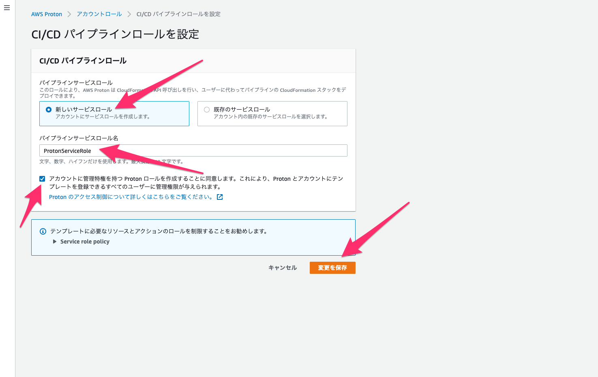
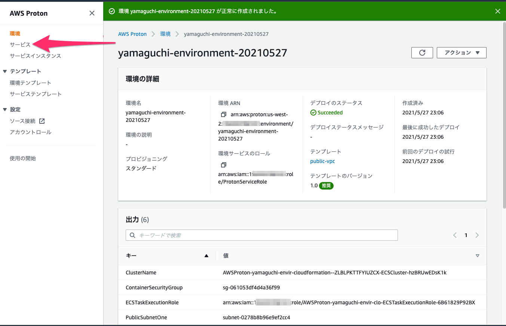
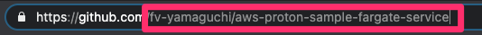
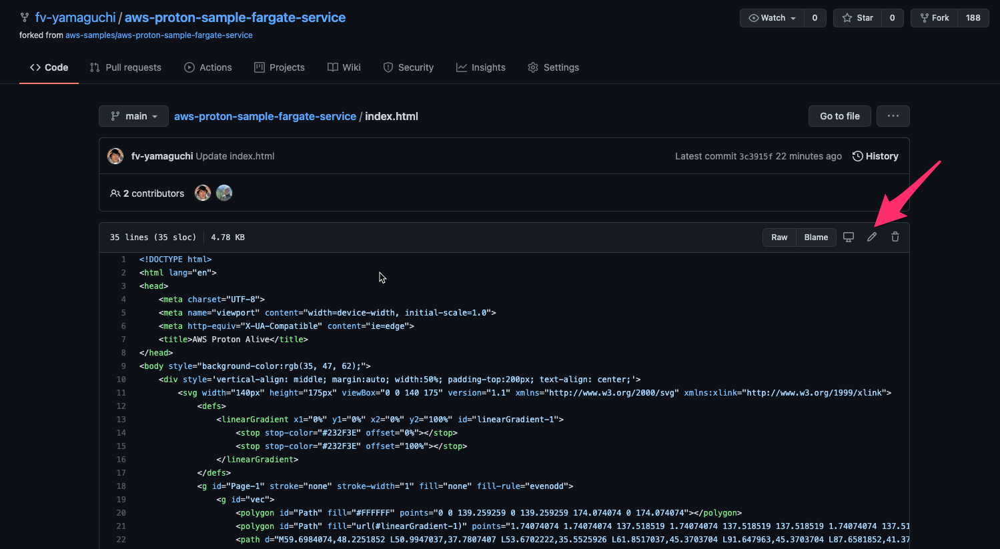

ハンズオンの前提
- AWSコンソールを使うブラウザは Chrome を推奨しています
- AdministratorAccessポリシーが追加されたIAMユーザーで作業を行います
- リージョンはProtonが提供されているリージョンとして バージニア北部(us-east-1)、オハイオ(us-east-2)、オレゴン(us-west-2)、東京(ap-northeast-1)、アイルランド(eu-west-1) のいずれかを利用します。
- 本手順書では オレゴン(us-west-2) を利用しています。
- ハンズオンで構築した AWS利用料金は 数十円程度 要します。
- VPCが新規に作成されます。VPCは１リージョンに ６つ以上作成できないため、５つ未満のリージョンを使うか、不要はVPCを事前に削除してください。(AWSに上限緩和の申請をしている場合を除く)
ハンズオンの目的
Protonは、アプリケーション開発に必要なAWS環境、継続的インテグレーション/継続的デプロイパイプラインを開発者が様々なインタフェース、言語を意識することなくProton上から利用することができることに大きなメリットがあります。
本ハンズオンは、アプリケーション実行に必要な環境構築に責任をもつインフラエンジニア、アプリケーション開発に責任をもつ開発エンジニアとそれぞれの観点で作業を記載しています。それぞれの作業内容を理解し、Protonを実際に利用する時のイメージを持ってもらうことを目的としています。
構成図
Protonから構築される環境は下記図となります。
AWSサービスの説明
Proton
- コンテナおよびサーバーレスアプリケーション向けのマネージドアプリケーションデプロイサービス
- サービス(アプリケーション実行環境)からインフラ環境(VPC、サブネット、ECSなど)をProtonでカバーすることで、開発者とインフラエンジニアの共通言語をProtonに統合することができる
Cloud9
- ブラウザのみでコードを記述、実行、デバッグできるクラウドベースの統合開発環境 (IDE)
- JavaScript、Python、PHP などの一般的なプログラム言語に不可欠なツールがあらかじめパッケージ化されている
CodeBuild
- ソースコードをコンパイルし、テストを実行し、デプロイ可能なソフトウェアパッケージを作成できる完全マネージド型のビルドサービス
- ビルドサーバーのプロビジョニング、管理、スケーリングが不要
CodePipline
- 完全マネージド型の継続的デリバリーサービスで、素早く確実性のあるアプリケーションとインフラストラクチャのアップデートのための、パイプラインのリリースを自動化
- 定義したリリースモデルに基づき、コードチェンジがあった場合のフェーズの構築、テスト、デプロイを自動化
ECS Fargate
- コンテナおよびコンテナの動作に関する設計(リソースや環境変数など)を定義することで動作するサーバやクラスタなどホストマシンを意識せずにコンテナを実行できるサービスです
Cloud9を作成する
Protonの構築はAWS CLIを利用して進めていきます。AWS CLIはCloud9上で実行しますので、まずはCloud9を作成していきましょう。
- マネージメントコンソールのCloud9ページへ移動します。
※Cloud9のページに移動する前に別タブ等でマネジメントコンソールのウインドウを開いておく事。後述で利用します。
- マネージメントコンソールのCloud9ページへ移動します。
- 「Create environment」をクリックします。
- Name に 名字-年月日(yamaguchi-20210911) など、あとで削除する際にわかりやすい名前を入力し、「Next step」をクリックします。
- Configure settings 画面はデフォルトのまま 「Next step」をクリックします。
※Configure settingsでVPCとサブネットが存在しない場合はCreate new VPCをクリックし、簡易ウィザードでVPCを作成する
VPCウィザードを起動をクリック
VPC名、アベイラリティーゾーンをus-west-2aを選択し、VPCの作成をクリック
その後、Cloud9の作成画面にて、更新ボタンをクリックする
※IPv4 CIDRブロックは10.0.0./16とする
※パブリックのサブネットのIPv4 CIDRは10.0.0.0/24とする
- Review 画面が表示されるので 「Create environment」をクリックします。
- 下記のような画面が表示され、Cloud9のセットアップが実行されます。セットアップが終わるまで３分ほど待ちます。
- セットアップが完了すると下記のように、画面下部にコンソールが表示されます。このコンソールを用いてオペレーションしていきます。(矢印で示している境界線をドラッグすることでコンソールの表示領域を広げることができます。おすすめです。)
GitHub を登録する
- Github(https://github.com/)にログインする。アカウントが無い方は真ん中のテキストボックスに E メールアドレスを入力していただき、 Sign up for Github を押していただき受信したメールの指示に従いアカウント登録お願いします。
- ログイン
- Fork したいページにアクセスして右上の Fork を押します。
https://github.com/aws-samples/aws-proton-sample-fargate-service
- グループに所属している場合は、どのアカウントにフォークするのか選択肢が出てくるので、フォークしたアカウントを選択します。
- しばらく待つと自分のアカウントにフォークされます。
Protonに必要な事前設定を適用する
Protonの構築はAWS CLIを利用して進めていきます。AWS CLIはCloud9上で実行しますので、まずはCloud9を作成していきましょう。
- Protonコマンドを有効化する為、Cloud9のAWS CLIを最新バージョンとする
※ aws --vserion 実行時に aws-cli/1.19.91 より新しいバージョンが返ってきた場合は、本手順はスキップし、 2. jq インストールの手順 に進んでください。
①AWS CLIの現在のバージョンを確認する aws --version ⇒aws-cli/1.19.87 Python/2.7.18 ②pip3でaws cliの最新バージョンをインストールする pip3 install --upgrade --user awscli ③awsを含むフォルダがPATH変数の一部であることを確認する ls -a ~ ⇒.awsが含まれる事 ④PATHを書き換える export PATH=$HOME/.local/bin:$PATH ⑤プロファイルを現在のセッションに再ロードする source ~/.bash_profile ⑥AWS CLIのバージョンが1.19.91になっている事を確認する aws --version ⇒aws-cli/1.19.91 Python/3.7.9 Linux/4.14.232-176.381.amzn2.x86_64 botocore/1.20.91
- AWS CLI実行結果のjsonをパースするため、jqをインストールします。コンソールより下記のコマンドを実行します。
こうなります。
sudo yum install -y jq
- Protonセットアップ用のコードをGithub上のリポジトリよりクローンします。
git clone \ https://github.com/aws-samples/aws-proton-sample-templates.git
- クローンしたディレクトリへ移動します。
cd ~/environment/aws-proton-sample-templates/loadbalanced-fargate-svc
- 後続の手順で利用するパラメーターとして、AWSアカウントIDを環境変数に登録します。
account_id=`aws sts get-caller-identity|jq -r ".Account"`
- AWSアカウントIDが環境変数として登録されていることを確認します。登録されていれば12桁の数字が出力されます。
echo $account_id
- aws proton help コマンドを実行し、AWS CLIに追加されていることを確認します。ヘルプが表示されればOKです。表示されたら q を入力し、ヘルプ表示から抜けます。
aws proton help
- Proton が CloudFormation を用いてAWSアカウント常にリソースを作成しますので、テンプレートを扱うための S3バケット を作成します。proton-cli-templates-AWSアカウントID数字12桁 の名前でS3バケットが作成されます。
例: proton-cli-templates-123456789012
※ region=us-west-2 と LocationConstraint=us-west-2 について、オレゴン以外を利用している場合は、利用しているリージョンに置き換えてください。
aws s3api create-bucket \
--region us-west-2 \
--bucket "proton-cli-templates-${account_id}" \
--create-bucket-configuration LocationConstraint=us-west-2
- s3バケットが作成されたことを確認します。AWSマネージメントコンソールより、s3のコンソールを開きます。
(現在開いているCloud9のコンソールとは別タブで開くことを推奨します)
左上の Cloud9 のアイコンをクリックすると出てくる、Go To Your Dashboard をクリックすると新しいタブを開くことができます。
- s3バケットの検索フォームから proton-cli-templates-AWSアカウントID12桁の数字 を入力します。作成したバケットが表示されれば確認完了です。
例：proton-cli-templates-123456789012
- 権限関連の制限でハンズオンが停止しないよう、Cloud9インスタンスにIAMロールを付与します。
EC2サービスを選択後、aws-cloud9-XXのインスタンスをチェックし、アクションからセキュリティ、IAMロールを変更をクリック
新しいIAMロールを作成をクリックし、IAM作成画面に遷移してください。
EC2を選択し、アクセス権限に移動

AdministratorAccess権限にチェックを入れ、任意の名前でIAMロールを作成する
作成後、EC2のアタッチ画面で更新ボタンをクリックし、Cloud9用のEC2に作成したIAMロールをアタッチする。
Cloud9のコンソールに戻り、右上の歯車マークからAWS Settingsを選択し、
CredentialsのAWS managed temporary credentialsのチェックを無効化する
- Protonが、Codeサービスによる継続的デリバリーパイプラインを通して、アプリケーションをデプロイできるようにするため、自身のGithubアカウントにクローンしたサンプルアプリケーションリポジトリとAWS CodeStar Connectionの接続を構成します。
CodeStar Connectionsの設定を行うため、CodePipelineコンソールへ移動します。(Chromeなどで別タブで開くことを推奨) - 左のツリーより、「設定」->「接続」をクリックします。
- 「接続を作成」をクリックします。
- 「Github」を選択、「GitHub アプリ接続を作成する」に接続名を入力します。接続名は 名字-年月日(yamaguchi-20210911)など、あとで環境を掃除する際にわかりやすい名前にしてください。
入力後、「GitHubに接続する」をクリックします。 - 初回接続時は以下の案内が出るので、Authorise AWS Connector for GitHubをクリック
- 「新しいアプリをインストールする」をクリックします。
- Githubへ画面遷移します。ProtonサンプルコードのリポジトリをForkしたGithubアカウントを選択します。
- ForkしたProtonサンプルコードのリポジトリを選択し、「Install」をクリックします。
- CodeStar Connectionsの設定画面にリダイレクトされます。
「接続」をクリックして設定を完了します。 - 作成結果が表示されますのでステータスが「利用可能」になっていることを確認します。
- Protonのサービスロール(アカウントロール・CI/CDパイプラインサービスロールとも呼称される)を作成します。マネージメントコンソールより、AWS Protonのコンソールに移動します。
- 左側のハンバーガーメニューをクリックし、「アカウントロール」をクリックします。
- アカウントロールの画面に移動したら、「設定」ボタンをクリックします。
- CI/CDパイプラインロールの設定で、「新しいサービスロール」にチェック、「パイプラインサービスロール名」に ProtonServiceRole を入力、「アカウントに管理権限を〜」にチェックを入れ、「変更を保存」ボタンをクリックします。
 - 「アカウントロールが正常に設定されました」のメッセージが出力され、入力したCI/CDパイプラインロール名が表示されていることを確認します。
以上でProtonを利用する下準備は完了です。
環境テンプレートを登録する
Protonにサンプルの環境テンプレートを登録します。環境テンプレートは、VPC、サブネットなどアプリケーションの実行環境(本ハンズオンではECS Fargate)が稼働するために必要なインフラ構成を定義したCloudFormationテンプレートとなります。
本ハンズオンで利用するサンプルのテンプレートはECSクラスターと２つのパブリックサブネットを持つVPCで構成されています。
- 環境テンプレート(環境作成を処理するためのCloudFormationテンプレートの入れ物)を作成します
※ --region us-west-2 について、オレゴン以外を利用している場合は、利用しているリージョンに置き換えてください。
aws proton create-environment-template \ --region us-west-2 \ --name "public-vpc" \ --display-name "PublicVPC" \ --description "VPC with Public Access and ECS Cluster"
レスポンス例：
{
"environmentTemplate": {
"arn": "arn:aws:proton:us-west-2:123456789012:environment-template/public-vpc",
"createdAt": 1623317847.386,
"description": "VPC with Public Access and ECS Cluster",
"displayName": "PublicVPC",
"lastModifiedAt": 1623317847.386,
"name": "public-vpc"
}
}
- 続いて、環境テンプレートにバージョンを作成します。環境テンプレートには、バージョン(メジャーバージョン、マイナーバージョン)という概念があり、利用できるテンプレートを世代管理することが可能です。バージョンと環境テンプレートに紐づくCloudFormationテンプレートはセットで管理されます。CloudFormationテンプレートを配置し、環境テンプレートのバージョンと紐付けを行います。初期は、メジャーバージョン１、 マイナーバージョン 0 で登録されます。
※ --region us-west-2 について、オレゴン以外を利用している場合は、利用しているリージョンに置き換えてください。
tar -zcvf env-template.tar.gz environment/
aws s3 cp env-template.tar.gz s3://proton-cli-templates-${account_id}/env-template.tar.gz \
--region us-west-2
rm env-template.tar.gz
aws proton create-environment-template-version \
--region us-west-2 \
--template-name "public-vpc" \
--description "Version 1" \
--source s3="{bucket=proton-cli-templates-${account_id},key=env-template.tar.gz}"
レスポンス例：
{
"environmentTemplateVersion": {
"arn": "arn:aws:proton:us-west-2:123456789012:environment-template/public-vpc:1.0",
"createdAt": 1623317807.346,
"description": "Version 1",
"lastModifiedAt": 1623317807.346,
"majorVersion": "1",
"minorVersion": "0",
"status": "REGISTRATION_IN_PROGRESS",
"templateName": "public-vpc"
}
}
- 環境テンプレートの登録状態をバージョン指定し確認します。DRAFTの状態で環境テンプレートが登録されていることが確認できます。
※ --region us-west-2 について、オレゴン以外を利用している場合は、利用しているリージョンに置き換えてください。
aws proton get-environment-template-version \ --region us-west-2 \ --template-name "public-vpc" \ --major-version "1" \ --minor-version "0"
レスポンス例：
{
"environmentTemplateVersion": {
"status": "DRAFT",
"majorVersion": "1",
"statusMessage": "",
"minorVersion": "0",
"templateName": "public-vpc",
"lastModifiedAt": 1630393516.525,
"arn": "arn:aws:proton:us-west-2:123456789012:environment-template/public-vpc:1.0",
"schema": "schema:\n format:\n openapi: \"3.0.0\"\n environment_input_type: \"PublicEnvironmentInput\"\n types:\n PublicEnvironmentInput:\n type: object\n description: \"Input properties for my environment\"\n properties:\n vpc_cidr:\n type: string\n description: \"This CIDR range for your VPC\"\n default: 10.0.0.0/16\n pattern: ([0-9]{1,3}\\.){3}[0-9]{1,3}($|/(16|24))\n subnet_one_cidr:\n type: string\n description: \"The CIDR range for subnet one\"\n default: 10.0.0.0/24\n pattern: ([0-9]{1,3}\\.){3}[0-9]{1,3}($|/(16|24))\n subnet_two_cidr:\n type: string\n description: \"The CIDR range for subnet two\"\n default: 10.0.1.0/24\n pattern: ([0-9]{1,3}\\.){3}[0-9]{1,3}($|/(16|24))\n",
"createdAt": 1630393514.53,
"description": "Version 1"
}
}
- 環境テンプレートのメジャーバージョン、マイナーバージョンには、DRAFT、PUBLISHED(公開)のステータスがあります。これによりインフラチームが環境テンプレートの安定性を確認するまではDRAFTとしておき、開発チームは公開された環境テンプレートのみ利用できるようにする、などの管理が可能となります。
先ほど登録した環境テンプレートはDRAFTステータスですので、PUBLISHEDしてみましょう。
※ --region us-west-2 について、オレゴン以外を利用している場合は、利用しているリージョンに置き換えてください。
aws proton update-environment-template-version \ --region us-west-2 \ --template-name "public-vpc" \ --major-version "1" \ --minor-version "0" \ --status "PUBLISHED"
レスポンス例：
{
"environmentTemplateVersion": {
"status": "PUBLISHED",
"majorVersion": "1",
"statusMessage": "",
"minorVersion": "0",
"recommendedMinorVersion": "0",
"templateName": "public-vpc",
"lastModifiedAt": 1630393667.876,
"arn": "arn:aws:proton:us-west-2:123456789012:environment-template/public-vpc:1.0",
"schema": "schema:\n format:\n openapi: \"3.0.0\"\n environment_input_type: \"PublicEnvironmentInput\"\n types:\n PublicEnvironmentInput:\n type: object\n description: \"Input properties for my environment\"\n properties:\n vpc_cidr:\n type: string\n description: \"This CIDR range for your VPC\"\n default: 10.0.0.0/16\n pattern: ([0-9]{1,3}\\.){3}[0-9]{1,3}($|/(16|24))\n subnet_one_cidr:\n type: string\n description: \"The CIDR range for subnet one\"\n default: 10.0.0.0/24\n pattern: ([0-9]{1,3}\\.){3}[0-9]{1,3}($|/(16|24))\n subnet_two_cidr:\n type: string\n description: \"The CIDR range for subnet two\"\n default: 10.0.1.0/24\n pattern: ([0-9]{1,3}\\.){3}[0-9]{1,3}($|/(16|24))\n",
"createdAt": 1630393503.385,
"description": "Version 1"
}
}
以上で環境テンプレートの登録、公開は完了です。
続いてサービステンプレートの登録をへ進みましょう。
サービステンプレートを登録する
Protonにサンプルのサービステンプレートを登録します。このサービステンプレートには、ロードバランサーの背後でECS Fargateサービスをプロビジョニングするために必要なすべてのリソースと、AWS CodeBuild/CodePipelineを使用した継続的デリバリーパイプラインが含まれています。実体は環境テンプレート同じくCloudFormationテンプレートです。
- サービステンプレートを作成します。
※ --region us-west-2 について、オレゴン以外を利用している場合は、利用しているリージョンに置き換えてください。
aws proton create-service-template \ --region us-west-2 \ --name "lb-fargate-service" \ --display-name "LoadbalancedFargateService" \ --description "Fargate Service with an Application Load Balancer"
レスポンス例：
{
"serviceTemplate": {
"displayName": "LoadbalancedFargateService",
"name": "lb-fargate-service",
"lastModifiedAt": 1630393745.939,
"arn": "arn:aws:proton:us-west-2:123456789012:service-template/lb-fargate-service",
"createdAt": 1630393745.939,
"description": "Fargate Service with an Application Load Balancer"
}
}
- サービステンプレートにも同じようにバージョン(メジャーバージョン、マイナーバージョン)、そしてDraft、Published(公開)のステータスがあります。
さらに、サービステンプレートは環境テンプレートと関連づけが必要となります。(そのサービスはどの環境で動作させるのかという関連がなければ、どんな環境でも動くサービスとして成立しなければいけません。そんなことは保証できませんよね)
これにより、環境テンプレートで作成したVPCなどの上で、サービステンプレートで定義したサービス(アプリケーション実行環境)をProtonを通して構成できるようになります。
※ --region us-west-2 とarn:aws:proton:us-west-2について、オレゴン以外を利用している場合は、利用しているリージョンに置き換えてください。
tar -zcvf svc-template.tar.gz service/
aws s3 cp svc-template.tar.gz s3://proton-cli-templates-${account_id}/svc-template.tar.gz --region us-west-2
rm svc-template.tar.gz
aws proton create-service-template-version \
--region us-west-2 \
--template-name "lb-fargate-service" \
--description "Version 1" \
--source s3="{bucket=proton-cli-templates-${account_id},key=svc-template.tar.gz}" \
--compatible-environment-templates '[{"templateName":"public-vpc","majorVersion":"1"}]'
レスポンス例：
{
"serviceTemplateVersion": {
"status": "REGISTRATION_IN_PROGRESS",
"majorVersion": "1",
"description": "Version 1",
"templateName": "lb-fargate-service",
"lastModifiedAt": 1630393809.611,
"compatibleEnvironmentTemplates": [
{
"majorVersion": "1",
"templateName": "public-vpc"
}
],
"arn": "arn:aws:proton:us-west-2:123456789012:service-template/lb-fargate-service:1.0",
"createdAt": 1630393809.611,
"minorVersion": "0"
}
}
- サービステンプレートの登録状態をバージョン指定し確認します。DRAFTの状態でサービステンプレートが登録されていることが確認できます。
※ --region us-west-2 について、オレゴン以外を利用している場合は、利用しているリージョンに置き換えてください。
aws proton get-service-template-version \ --region us-west-2 \ --template-name "lb-fargate-service" \ --major-version "1" \ --minor-version "0"
レスポンス例：
{
"serviceTemplateVersion": {
"status": "DRAFT",
"majorVersion": "1",
"statusMessage": "",
"description": "Version 1",
"templateName": "lb-fargate-service",
"lastModifiedAt": 1630393811.759,
"compatibleEnvironmentTemplates": [
{
"majorVersion": "1",
"templateName": "public-vpc"
}
],
"arn": "arn:aws:proton:us-west-2:123456789012:service-template/lb-fargate-service:1.0",
"schema": "schema:\n format:\n openapi: \"3.0.0\"\n service_input_type: \"LoadBalancedServiceInput\"\n pipeline_input_type: \"PipelineInputs\"\n\n types:\n LoadBalancedServiceInput:\n type: object\n description: \"Input properties for a loadbalanced Fargate service\"\n properties:\n port:\n type: number\n description: \"The port to route traffic to\"\n default: 80\n minimum: 0\n maximum: 65535\n desired_count:\n type: number\n description: \"The default number of Fargate tasks you want running\"\n default: 1\n minimum: 1\n task_size:\n type: string\n description: \"The size of the task you want to run\"\n enum: [\"x-small\", \"small\", \"medium\", \"large\", \"x-large\"]\n default: \"x-small\"\n image:\n type: string\n description: \"The name/url of the container image\"\n default: \"public.ecr.aws/z9d2n7e1/nginx:1.21.0\"\n minLength: 1\n maxLength: 200\n\n PipelineInputs:\n type: object\n description: \"Pipeline input properties\"\n properties:\n dockerfile:\n type: string\n description: \"The location of the Dockerfile to build\"\n default: \"Dockerfile\"\n minLength: 1\n maxLength: 100\n unit_test_command:\n type: string\n description: \"The command to run to unit test the application code\"\n default: \"echo 'add your unit test command here'\"\n minLength: 1\n maxLength: 200\n environment_account_ids:\n type: string\n pattern: '^$|^\\d{12}(,\\d{12})*$'\n description: \"The environment account ids for service instances using cross account environment, separated by ,\"\n default: \"\"\n maxLength: 200\n",
"createdAt": 1630393809.611,
"minorVersion": "0"
}
}
- サービステンプレートにもメジャーバージョン、マイナーバージョンに対する、DRAFT、PUBLISHED(公開)のステータスがあります。先ほど登録したサービステンプレートはDRAFTステータスですので、PUBLISHEDしてみましょう。
※ --region us-west-2 について、オレゴン以外を利用している場合は、利用しているリージョンに置き換えてください。
aws proton update-service-template-version \ --region us-west-2 \ --template-name "lb-fargate-service" \ --major-version "1" \ --minor-version "0" \ --status "PUBLISHED"
レスポンス例：
{
"serviceTemplateVersion": {
"status": "PUBLISHED",
"majorVersion": "1",
"statusMessage": "",
"description": "Version 1",
"recommendedMinorVersion": "0",
"templateName": "lb-fargate-service",
"lastModifiedAt": 1630393933.18,
"compatibleEnvironmentTemplates": [
{
"majorVersion": "1",
"templateName": "public-vpc"
}
],
"arn": "arn:aws:proton:us-west-2:123456789012:service-template/lb-fargate-service:1.0",
"schema": "schema:\n format:\n openapi: \"3.0.0\"\n service_input_type: \"LoadBalancedServiceInput\"\n pipeline_input_type: \"PipelineInputs\"\n\n types:\n LoadBalancedServiceInput:\n type: object\n description: \"Input properties for a loadbalanced Fargate service\"\n properties:\n port:\n type: number\n description: \"The port to route traffic to\"\n default: 80\n minimum: 0\n maximum: 65535\n desired_count:\n type: number\n description: \"The default number of Fargate tasks you want running\"\n default: 1\n minimum: 1\n task_size:\n type: string\n description: \"The size of the task you want to run\"\n enum: [\"x-small\", \"small\", \"medium\", \"large\", \"x-large\"]\n default: \"x-small\"\n image:\n type: string\n description: \"The name/url of the container image\"\n default: \"public.ecr.aws/z9d2n7e1/nginx:1.21.0\"\n minLength: 1\n maxLength: 200\n\n PipelineInputs:\n type: object\n description: \"Pipeline input properties\"\n properties:\n dockerfile:\n type: string\n description: \"The location of the Dockerfile to build\"\n default: \"Dockerfile\"\n minLength: 1\n maxLength: 100\n unit_test_command:\n type: string\n description: \"The command to run to unit test the application code\"\n default: \"echo 'add your unit test command here'\"\n minLength: 1\n maxLength: 200\n environment_account_ids:\n type: string\n pattern: '^$|^\\d{12}(,\\d{12})*$'\n description: \"The environment account ids for service instances using cross account environment, separated by ,\"\n default: \"\"\n maxLength: 200\n",
"createdAt": 1630393816.137,
"minorVersion": "0"
}
}
Protonに環境テンプレート、サービステンプレートが公開されました！
AWSマネージメントコンソールのProtonコンソールから環境テンプレート、サービステンプレートを確認してみましょう。
Protonコンソールから環境テンプレート、サービステンプレートを確認する
- AWSマネージメントコンソールのProtonコンソールに接続します。
(Chromeなどで別タブで開くことを推奨)
- 左のツリーより「環境テンプレート」をクリックします。
- 「PublicVPC」をクリックします。
- 最後にPublished(公開)したバージョンが推奨バージョンとしてバッジ表示されています。
環境テンプレートのバージョンにメジャーバージョン、マイナーバージョンがリストされ、ステータスがPublished(公開)になっていることも確認できます。 - つづいて、「サービステンプレート」をクリックします。
- 「LoadbalancedFargateService」 をクリックします。
- サービステンプレートが対応する環境テンプレートが表示されています。(環境テンプレートとサービステンプレートの紐付きを確認できる)
さらにサービステンプレートもバージョンがあり、メジャーバージョン、マイナーバージョンがリストされ、ステータスがPublished(公開)になっていることも確認できます。
一連のオペレーションで登録した環境テンプレート、サービステンプレートの状態が確認できました。全て最新のマイナーバージョンが公開され、開発チームで利用可能となっています。
さっそく開発チームにProtonからアプリケーション実行環境とアプリケーションをデプロイしてもらいましょう！(ハンズオンではいずれも自分でやるのですが。。。)
AWSマネージメントコンソールからProtonを操作してアプリケーション実行環境を構成する
Protonにサンプルの環境テンプレートを登録します。環境テンプレートは、VPC、サブネットなどアプリケーションの実行環境(本ハンズオンではECS Fargate)が稼働するために必要なインフラ構成を定義したCloudFormationテンプレートとなります。
本ハンズオンで利用するサンプルのテンプレートはECSクラスターと２つのパブリックサブネットを持つVPCで構成されています。
- 先ほど使ったProtonのコンソールを使って進めます。
左のツリーより「環境」をクリックします。 - 「環境を作成する」をクリックします。
- 環境テンプレートを選択より、先ほど作成した「PublicVPC」 (ラジオボックス)を選択し、「設定」をクリックします。
- 「環境名」に 名字-environment-20210911 (例：yamaguchi-environment-20210911)を入力、「環境ロール」に ProtonServiceRole を選択し、「次へ」をクリックします。
- 「Vpc cidr」に 10.100.0.0/16、「Subnet one cidr」に 10.100.0.0/24、「Subnet two cidr」に 10.100.1.0/24 を入力し、「次へ」をクリックします。
- レビュー画面は「作成」をクリックして次にすすみます。
- 環境の作成が実行されます。実際の処理はCloudFormationが実行されています。
デプロイのステータスが In progress から Succeeded に変わるまで数分かかります。数分後、リロードアイコンをクリックし、Succeededに変わることを確認します。
(このタイミングで飲み物など取りに行っても良いかもしれません。時間がある人は別のタブでCloudFormationを見ると動きがさらに理解できると思います) - デプロイのステータスがSucceeded になっていることを確認し、左のツリーより「サービス」をクリックします。
 - 「サービスを作成」をクリックします。

- 環境テンプレートを選択より、先ほど作成した「LoadbalancedFargateService」 (ラジオボックス)を選択し、「設定」をクリックします。
- 「サービス名」に 名字-service-日付 (例：yamaguchi-service-20210911)、ブランチ名に「main」、リポジトリIDに「githubユーザ名/aws-proton-sample-fargate-service」(※)、リポジトリ接続に先ほど作成したCodeStar Connectionsを選択し、「次へ」をクリックします。
※リポジトリIDは下記の画像を参考に、みなさんのリポジトリURLよりコピペしてください

- サービスはサービス内で動作するインスタンス(この場合はECS)がセットになります。サービス内で動作するサービスインスタンスに必要なパラメータを入力します。
「Name」に 名字-instance-日付 (例：yamaguchi-instance-20210911)を入力、「Environment」は先ほど作成した環境を選択し、「次へ」をクリックします。
- レビュー画面は「作成」をクリックして次にすすみます。
- サービスおよびサービスインスタンスの作成が実行されます。実際の処理はCloudFormationが実行されています。
デプロイのステータスが In progress から Succeeded に変わるまで10数分かかります。10数分後、リロードアイコンをクリックし、Succeededに変わることを確認します。
(再びブレイクタイムです、飲み物をどうぞ。時間がある人は別のタブでCloudFormationを見ると動きがさらに理解できると思います)
- デプロイのステータスがSucceeded になっていることを確認し、作成されたサービスインスタンス名をクリックします。
- ServiceEndpoint の値がデプロイされたサービスインスタンス上で稼働するアプリケーションのエンドポイント(接続先)となります。ServiceEndpoint の値(URL)をコピーして、ブラウザからアクセスしてみましょう。

- アプリケーションがデプロイされていれば、ServiceEndpointにアクセスした結果、下記のページが表示されます。(表示されなかったらうまくデプロイできなかった原因調査を手伝いますのでチューターに声をかけてください)
※Proton のアイコンでなく、nginx の画面が表示された場合は、CodePipeline の実行がまだ完了していない状態。CodePipeline の実行が完了すれば Proton のアイコンが表示されます。
下記の画面の場合はCodePiplelineの実行状況を確認しましょう。
以下の場合はまだ実行中の為、完了を待ってください。
アプリケーションのソースコードを変更し、継続デプロイを確認する
Protonから構成したサービスは、CodeBuild/CodePipelineによる継続的デプロイパイプラインが作成されています。継続的デプロイパイプラインの動作を確認するため、アプリケーションのソースコードを変更し、変更されたアプリケーションがデプロイされるか試してみましょう。
- GithubよりProtonのサンプルアプリケーションコードをforkしたリポジトリへアクセスします。リポジトリのファイル一覧より index.html を選択します。
- index.html の中身(HTMLコード)が表示されますので、下記スクリーンキャプチャを参考に編集アイコン(ペンアイコン)をクリックします。
 - 編集モードの画面になりました。26行目にある AWS Proton を Handson2021 に変更して保存します。保存は、画面下部の「Commit changes」をクリックします。
- このコード変更に対し、CodeBuild/CodePipelineによる継続的デプロイパイプラインがどのように反応しているか見てみましょう。
(もし前述のCodeStar Connectionsの作業からタブを閉じてしまった場合はもう一度CodePipelineのコンソールを開いて) CodePiplineコンソールにある左のツリーより、「パイプライン」をクリックします。
CodePipelineで構成されたパイプラインがリポジトリのコード変更を検知し、自動的にCodeBuildによるビルド＆デプロイ処理が実行されます。 - 「Deploy名字instance-日付」(例：Deployyamaguchi-instance-20210911) が成功すればデプロイは完了です。
デプロイ処理は、ECSタスク定義の更新 -> ECSクラスタ内のサービスへ新しいタスクの起動 -> ALBのターゲットグループへタスクの付け替え -> 既存タスクのConnection Draining -> 既存タスクの終了などが行われています。
終了まで8〜10分ほどかかります。「Deploy名字instance-日付」の成功表示を待たずとも、処理開始から3分ほどで実際に変更されたアプリケーションはデプロイされていますので、再びブラウザからServiceEndpointにアクセス(リロードでもOK)してみましょう。 - ServiceEndpointにアクセス(リロードでもOK)して下記のページが表示されれば、変更されたアプリケーションがデプロイされています。
以上でProtonを操作してアプリケーション実行環境を構成する手順は終了です。
インフラを意識せず、アプリケーション実行環境と継続的デプロイパイプラインが構成され、変更されたアプリケーションが継続的にデプロイされます。
これにより、開発チームがアプリケーション開発に集中できる環境を用意することができました。
ハンズオン終了後は、下記の手順で環境を片付けましょう。
- AWS Protonのサービスを選択し、対象を選択後、アクションから削除を実行します。
※削除まで少し時間が掛かります
- サービス一覧から完全に削除された事を確認します。
※画面を切り替える事で以下の画面になります
- AWS Protonの環境を選択し、環境をアクションから削除します。
※削除まで少し時間が掛かります
- AWS Protonの環境が全て削除されている事を確認します。
- AWS Protonのサービステンプレートを選択し、削除を実施します。
- AWS Protonの環境テンプレートを選択し、削除を実施します。
- S3のサービスを選択し、対象のバケットを空にしてから削除します。
対象バケットは以下の2種類
※例
・awsproton-yamaguchi-servi-pipelineartifactsbucket-159im6uyop51e
・proton-cli-templates-495911196177

- Codepipelineのサービスを選択し、設定から接続を選択、接続を削除します。
- Cloud9のサービスを選択し、対象のenviromentsを選択し、Deleteで削除を実施します。
※削除まで少し時間が掛かります
- Cloud9に付与したIAMロールを削除します。
- ProtonServiceRoleのIAMロールを削除します。
- ProtonRolePolicy-ProtonServiceRoleのIAMポリシーを削除します。
- ECRリポジトリを削除します。こちらは少し分かりにくいのでチェックする箇所と選択するボタンを矢印で示しています。
- CloudWatch Logsのロググループを削除します。こちらも出力されているログがどれに当たるのか少し分かりにくいのでチェックする箇所と選択するボタンを矢印で示しています。
CodeBuildのビルドプロジェクト実行ログ
- Cloud9用に今回新規のVPCを作成した人はそちらも削除下さい。
※デフォルトVPCを利用していた場合は削除不要
- これで今回のハンズオンで作成したリソースは全て削除されています。
皆様お疲れ様でした。